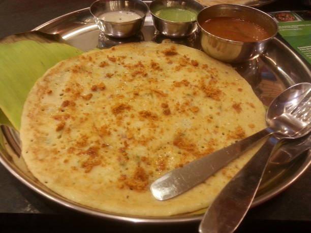

Masala Dosa

Description
Masala Dosa is a famous South Indian breakfast staple. It consists of a thin, crispy crepe made from a fermented batter of rice and lentils, filled with a savory spiced potato mixture. It is typically served with sambar and coconut chutney.
Ingredients
- 2 cups Dosa Batter
- 4 large Potatoes, boiled and mashed
- 1 Onion, finely chopped
- 1 tsp Mustard Seeds
- 1 tsp Urad Dal
- A pinch of Turmeric Powder
- 2 Green Chilies, chopped
- A few Curry Leaves
- Oil or Ghee for cooking
Steps
- To make the filling, heat oil in a pan. Add mustard seeds and urad dal. Once they splutter, add onions, green chilies, and curry leaves. Sauté until onions are soft.
- Add turmeric powder and the boiled, mashed potatoes. Mix well, season with salt, and cook for 2-3 minutes. Your potato masala is ready.
- Heat a flat non-stick pan (tava). Pour a ladleful of dosa batter in the center and spread it outwards in a circular motion to make a thin crepe.
- Drizzle some oil or ghee around the edges. Cook until the bottom is golden and crispy.
- Place a spoonful of the potato filling in the center of the dosa.
- Fold the dosa in half and serve hot with sambar and chutney.
Back to Home